E-Bike Rider Assistant
DURATION
Jul 2020 to Current
MY ROLE
UI/UX Designer, from Jul 2020 to Mar 2022
Product Manager, from Apr 2022 to Oct 2024
TEAM STRUCTURE
Software, Firmware, Hardware, Marketing, After Sales
PRODUCT STATUS
Launched, iteration ongoing
PLATFORM
iOS / Android mobile app
TOOLS
Notion / Jira / Amplitude / Firebase / Miro / Figma
// You can download here :P
Product Background
Rider Assistant (HRA) is an auxiliary e-bike app for end-users, offering effortless management of e-bikes' system anytime, anywhere. It provides seamless monitoring and control capabilities with main functions including: e-bike pairing, route recording, riding data, part firmware update and maintenance reminder.
HRA serves 50,000+ riders across North America, Europe, and Asia, supporting 50+ ebike models from 15 brands, every feature has to work across a highly fragmented mix of hardware, firmware versions, and rider contexts.
When I took over the project, the product was in the late MVP stage, but there were significant UX issues and technical debt. My goal was to fix issues, stabilize the product, and drive cross-departmental collaboration in preparation for the next round of growth.
// I was the designer who redesigned the HRA 1.0 to version 2.0.
Problems & Challenges
1. Inheriting Legacy Gaps
The app was already under development but lacked key UX refinements and had unresolved technical debt. My role began with a comprehensive review of the product, identifying issues across functionality, design, and stability, and leading efforts to stabilize the app for continued iteration.
2. Cross-Department Communication
The development involved cross-functional teams: hardware, firmware, software, marketing, and after-sales teams. Each team had unique priorities, which often led to misalignment. I became the key facilitator, bridging technical and business goals while ensuring feedback from users and markets was continuously looped back into development priorities.
3. Hardware-Software Integration:
Unlike pure digital products, HRA required an in-depth understanding of how users interact with physical e-bikes. Design decisions couldn’t be made in isolation from firmware behaviors or riding context. This complexity required me to approach UX design not just as interface work, but as a bridge between rider behavior, hardware reality, and app logic.
4. Driving Value in a Non-Essential App
Because the e-bike didn’t require the app to function, a major challenge was defining and communicating the app’s
unique value proposition
. We focused on enhancing perceived value by developing features like personalized ride data, health metrics, and predictive maintenance reminders to make the app feel indispensable rather than optional.
5. Through Data to Justify Product Decisions
To prioritize improvements, I worked on identifying pain points using usage data and support feedback. I translated these into persuasive cases backed by data to ensure resource investment in key user experience problems, particularly those affecting retention.
Key Results
1. Optimized E-Bike Pairing Flow
📌 Problem:
Our research and users' data found that inconsistent pairing instructions due to differing power-on and BLE-connect lighting methods across different e-bike models led to frustration and drop-offs in the onboarding process.
🧭 What I Did?
1. Clarified pain points and the drop points
I conducted user interviews and analyzed our users' data to pinpoint critical steps where users were dropping off. And through these, I identified that the instructions on HRA for the e-bike pairing process were unclear for users, leading to difficulties during their first use.
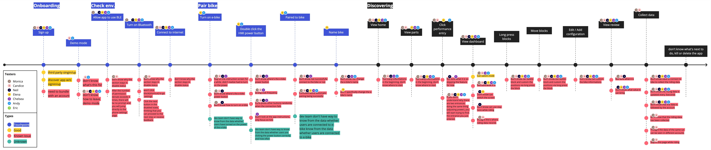
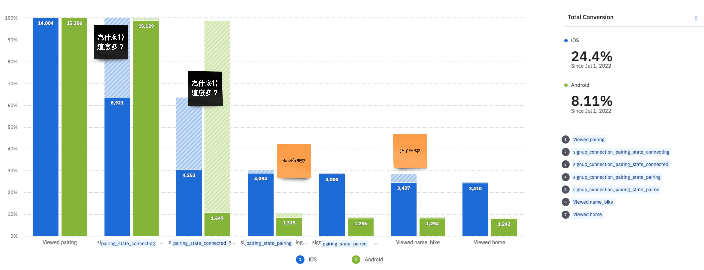
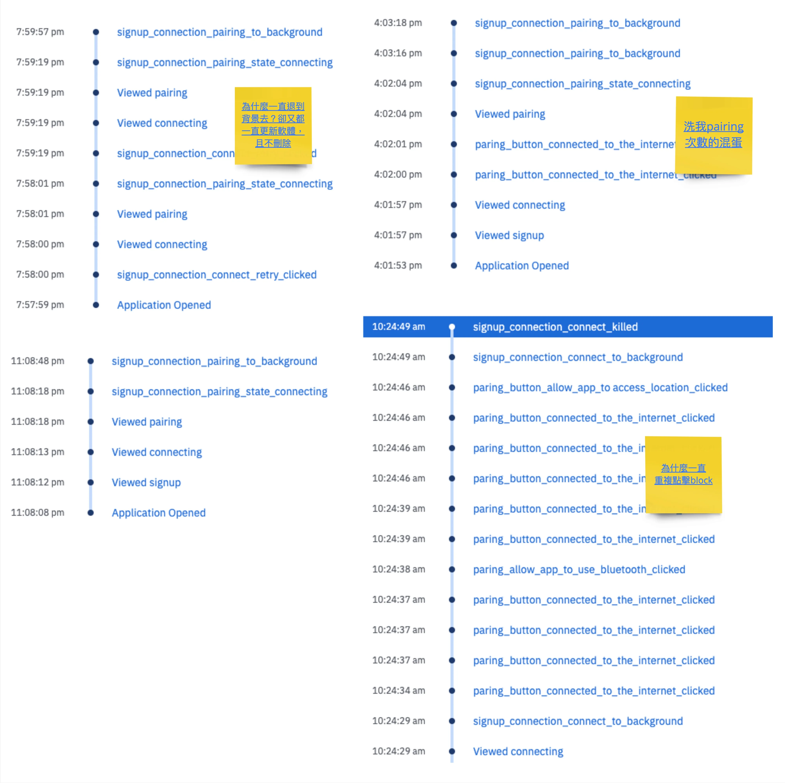
2. Reduced the number of steps, and optimized the code of the BLE pairing
I broke down the permission dialogs requirement and current HRA pairing process and documented the engineering implementation methods and required time for each step.
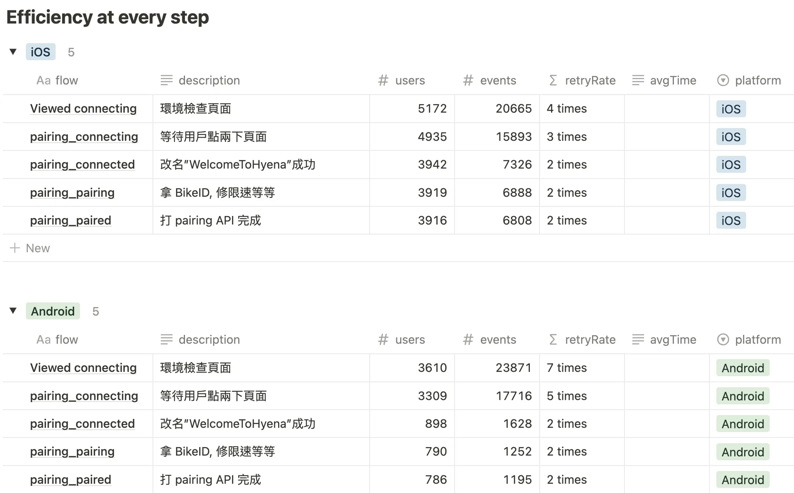
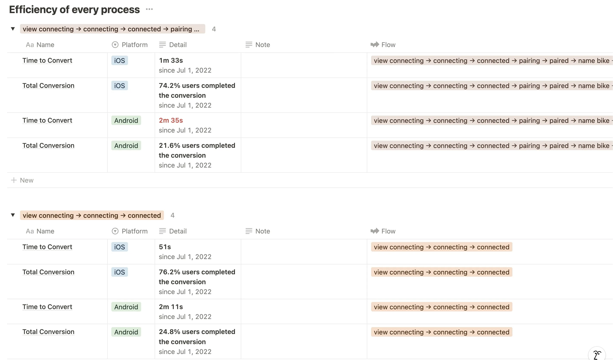
3. Cooperated with the Hardware and Firmware team to clarify the behaviors and limits of each HMI
Since HRA needs to support multiple bike models, each with different HMI startup procedures and indicator light patterns, I cooperated with the other dev departments to delineate all HMI behaviors and light indicator content.
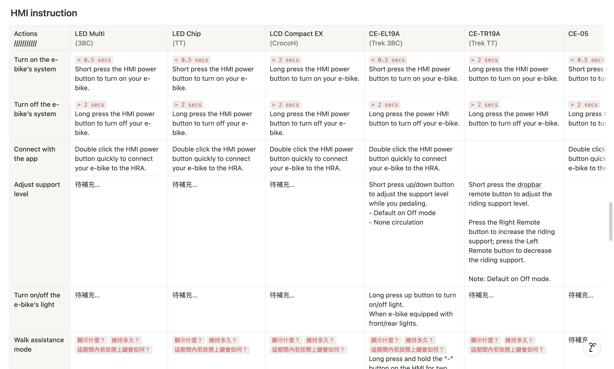
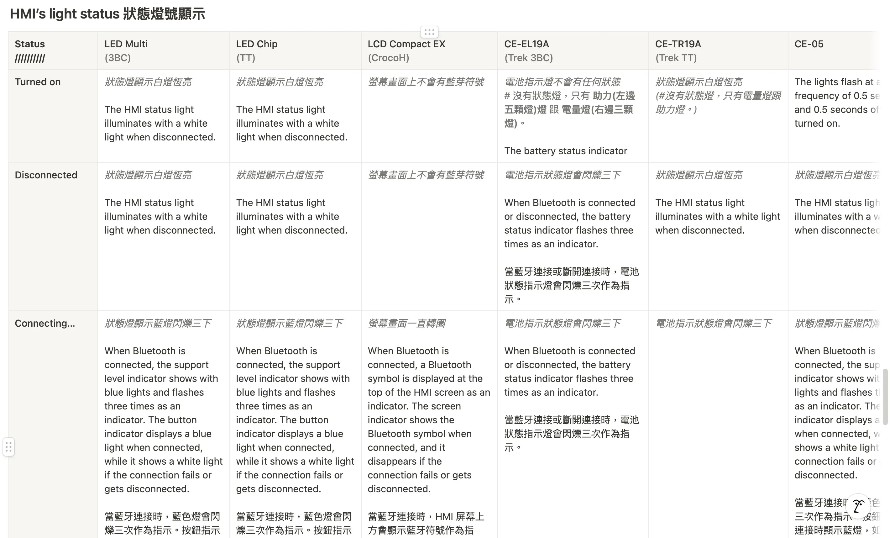
4. Redesign the pairing flow and compiled detailed specifications
Based on these references, I initiated a complete redesign of the pairing flow, introducing clearer visual guidance and contextual instructions based on bike model type. And compiled detailed specifications and led the app team and designers in optimizing the pairing process.
🦋 Result:
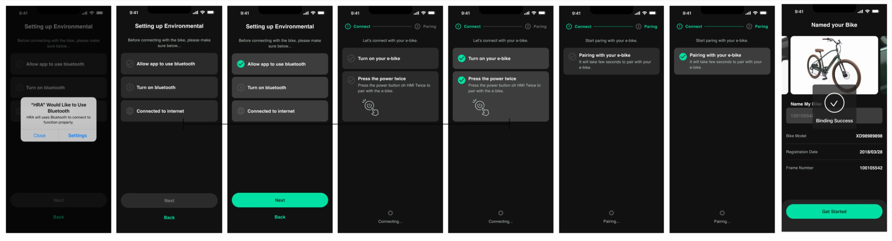
Before
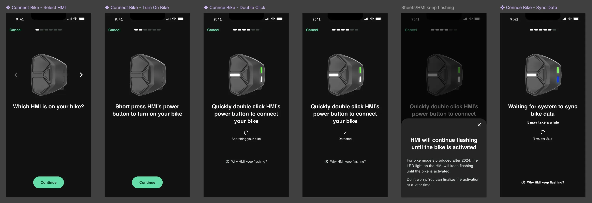
After
After releasing the new pairing flow and collecting data over 3 months, we saw significant improvements in both success rates and time-to-pair:
***iOS***
75% ➝ 95%
success rate
1m 33s ➝ 1m
average pairing time
***Android***
21% ➝ 90%
success rate
2m 35s ➝ 2m
average pairing time
📊 Android pairing success rate improved by
+328%
📊 iOS pairing time shortened by
−35%
📊
+17%
onboarding retention
2. Increased Firmware Update Success Rate
📌 Problem:
Before optimization, many users struggled to complete the e-bike firmware update process within the HRA. The update flow lacked proper feedback indicators, and firmware compatibility issues often led to failure without clear messaging. These issues resulted in user confusion, increased support inquiries, and a lack of trust in the app’s reliability.
🧭 What I Did?
To tackle this, I analyzed HRA data and convened a meeting with all stakeholders to emphasize the severity of the situation. I compiled detailed specifications based on the confirmed implementation methods and led the app team and designers in optimizing the update process.
1. Reanalyzed the existing OTA firmware update flow and mapped out failure points across different devices and firmware versions.
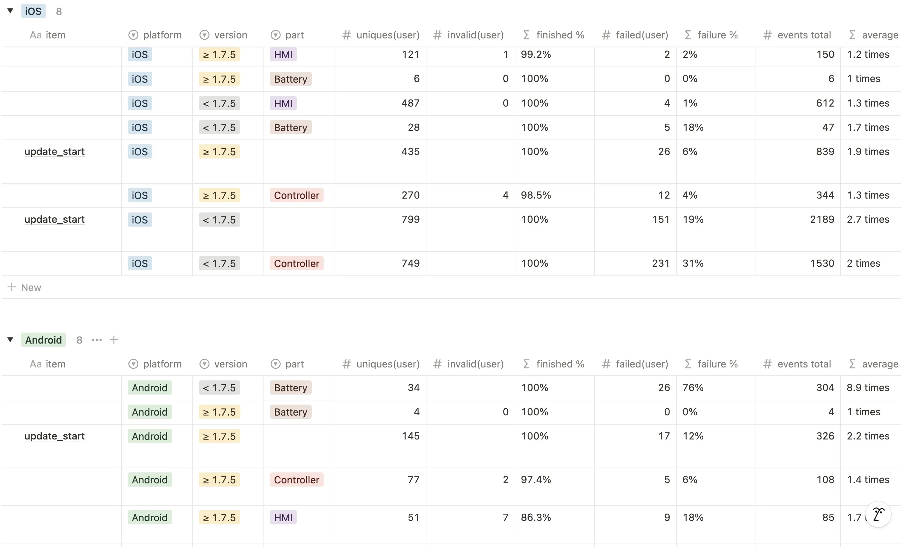
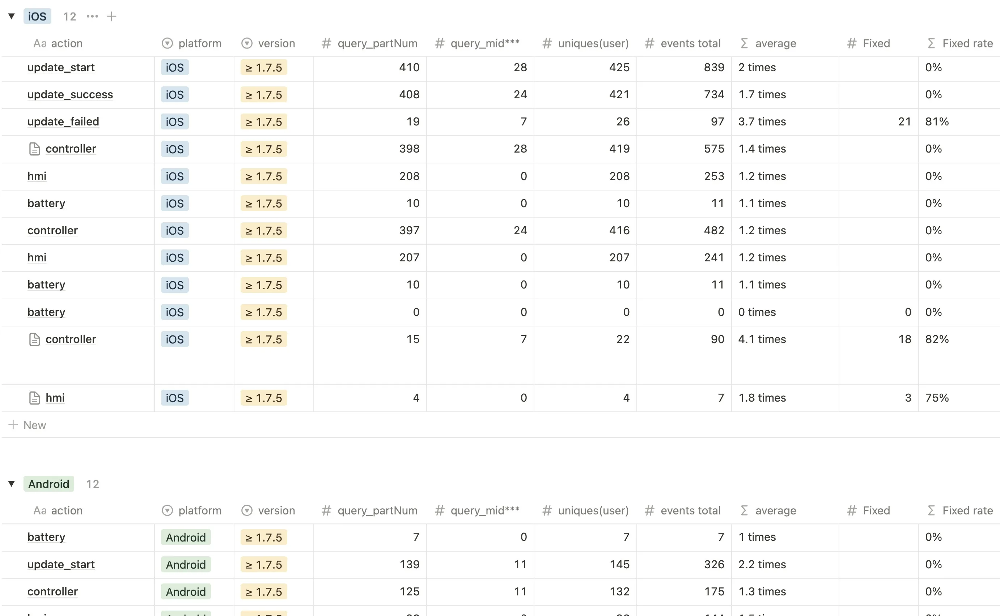
2. Collaborated with the middle-ware and firmware team to disassemble the update process, identify critical bugs and improve compatibility handling between application versions and firmware types.
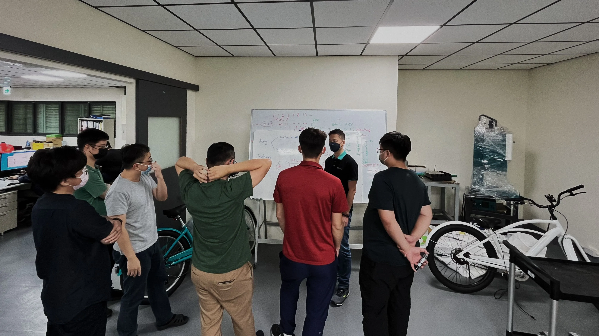
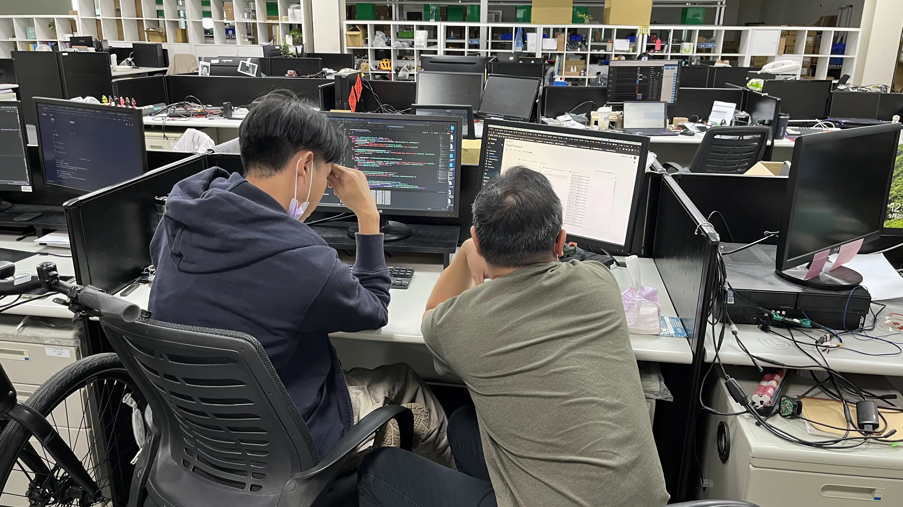
3. Led the app team to redesign a new update interface and instruction with real-time progress indication, error handling states, and step-by-step visual guidance.
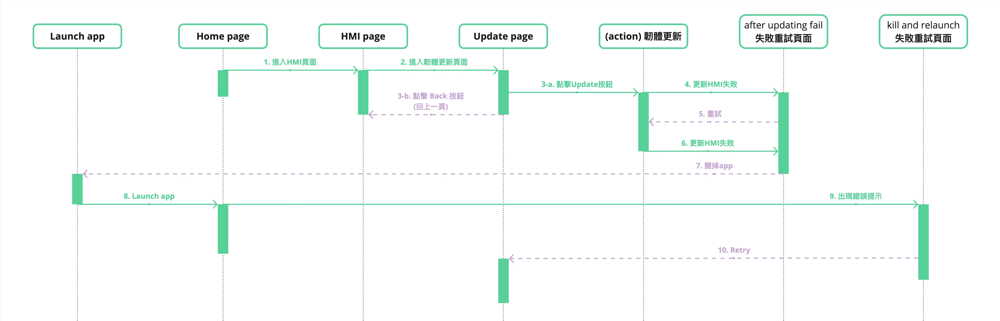
🦋 Result:
***iOS***
91% ➝ 99%
success rate
***Android***
65% ➝ 99%
success rate
📊 Android firmware update success improved by
+52%
.
📊
Over 90%
drop in update-related support tickets.
The new success rates significantly reduced support inquiries, we observed an over 90% drop in update-related support tickets within one month after launch. This optimization not only increased the success rate of firmware updates but also significantly reduced the issues users faced during the update process.
As a result, user satisfaction improved, and customer service pressure was alleviated. Internal field testing by after-sales teams also reported a 60% reduction in troubleshooting needs post-update.
3. Stabilized App Performance and Crash Rate
📌 Problem:
The Android app's crash-free rate sat at just 78%, meaning roughly 1 in 5 riders was hitting crashes or freezes, often mid-ride when they needed the app most. Crash complaints dominated our negative App Store reviews, dragging the rating down and eroding trust in HRA as a reliable riding companion. Without a fix, every new feature we shipped would be built on an unstable foundation.
🧭 What I Did?
1. Integrated Firebase Crashlytics to collect real-time crash reports with stack traces and user session context.
2. Prioritized crash hotfixes based on frequency and impact using a data dashboard I built with the team.
3. Worked closely with the QA team to expand edge-case testing, especially for BLE-related flows.
4. Set up a staged release plan to reduce mass rollout risks and validate improvements progressively.
🦋 Result:
Within 4 months of implementing the crash reduction plan:
📊 iOS Crash-free users rate improved from 92% ➝ 99% , Android Crash-free users rate improved from 78% ➝ 98% .
📊 Top 3 crash causes
were fully resolved and remained stable across versions.
Crashlytics logs confirmed the complete elimination of the top 3 crash causes across two app versions.
📊 Average App Store rating
boosted from
⭐️ 3.5
➝
⭐️ 4.2
.
After the app stabilized, users on the App Store and Google Play commended it with feedback like ‘smooth updates’ and ‘stable rides’!